Установка личного сертификата
Установка личных сертификатов немного отличается от установки корневых сертификатов - нужно установить сертификат со ссылкой на закрытую часть ключа.
Запустите панель управления КриптоПро и зайдите на вкладку Сервис 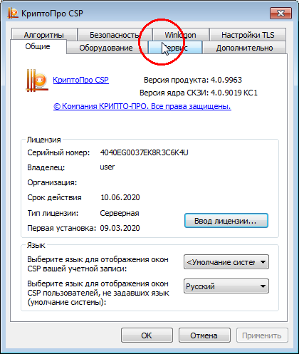
Нажмите кнопку Установить личный сертификат
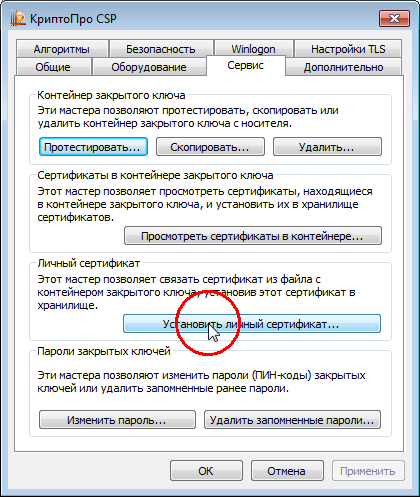
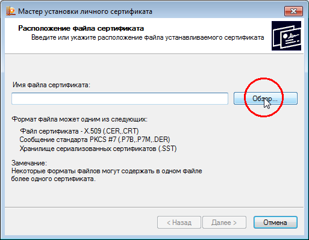
С помощью кнопки Обзор выберите файл сертификата - обычно он находится на флешке с ключами
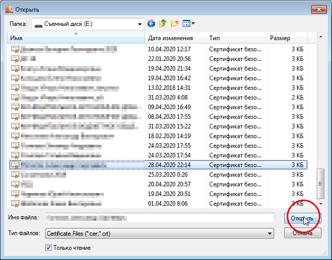
Дважды нажмите Далее
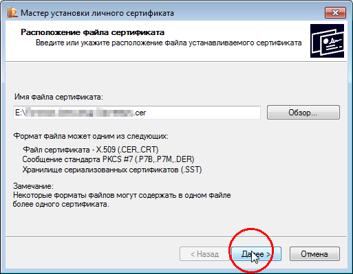
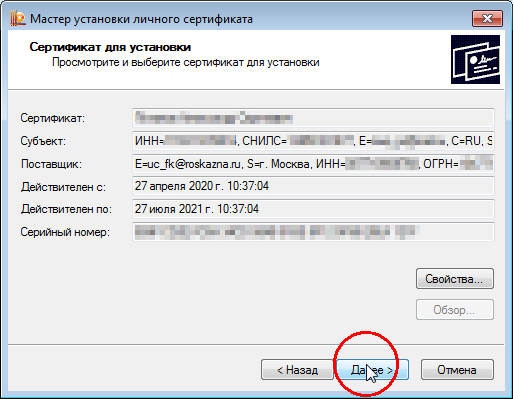
Отметьте галочку Найти контейнер автоматически и нажмите Далее
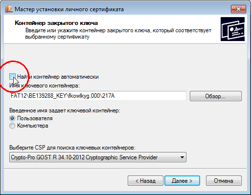
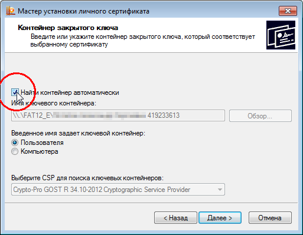
В следующем окне убедитесь, что в поле Имя хранилища сертификатов выбрано Личное. Нажмите Далее, затем Готово
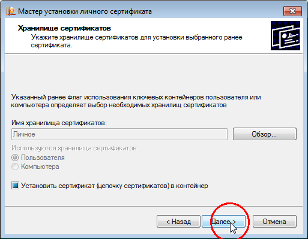
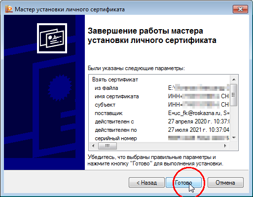
Введите пароль от контейнера
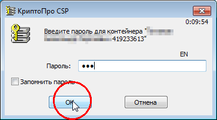
Сертификат установлен!